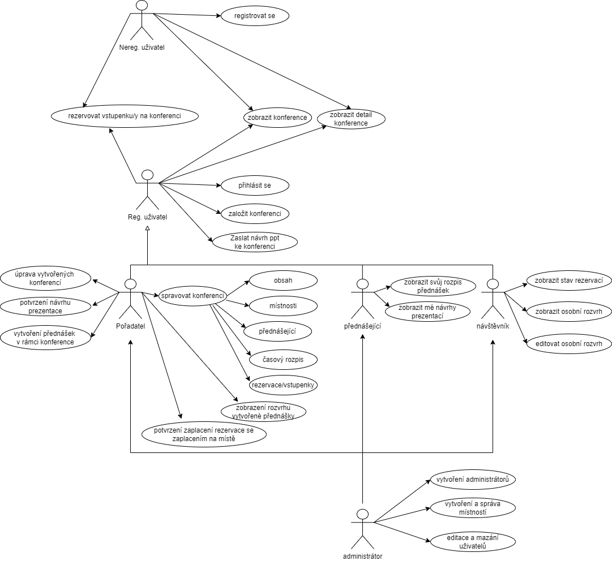
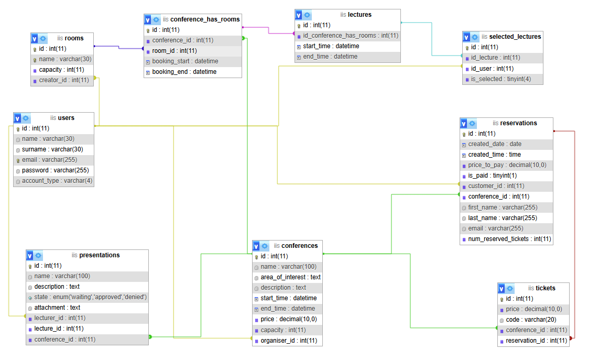

Konference
- Autoři
- Tomáš Dolák
xdolak09@stud.fit.vutbr.cz -
kapitán - struktura aplikace, návrh systému, přihlašování/registrace, správa uživatelů, bezpečnost,
rezervace lístků, potvrzení zaplacení lístků u platby na místě, administrátorské akce, dokumentace,
správa vytvořených rezervací daného uživatele, správa místností
- Monika Záhradníková
xzahra33@stud.fit.vutbr.cz -
člen - návrh systému, vytvoření seedů databáze, návrh seznamů pomocí komponenty Data Grid, CSS styly,
rozložení panelů a tlačítek, seznam konferencí, rozvrh konference, rozvrh přednášejícího, QA testování,
oprava zjištěných chyb, video návod
- Jan Křůmal
xkruma01@stud.fit.vutbr.cz -
člen - návrh systému, vytvoření databáze, zprovoznění aplikace na serveru,
- URL aplikace
- http://www.stud.fit.vutbr.cz/~xkruma01/
- (pokud má aplikace více vstupních stránek, napište obdobně další URL)
Uživatelé systému pro testování
Uveďte prosím existující zástupce všech rolí uživatelů.
| Login | Heslo | Role |
|---|
| admin@local.cz | test | Administrátor |
| novakova@seznam.cz | test | Registrovaný uživatel |
| alojz11@seznam.cz | test | Registrovaný uživatel |
| martin@azet.cz | test | Registrovaný uživatel |
| hana1@gmail.com | test | Registrovaný uživatel |
Uživatel novakova@seznam.cz má rezervovány lístky na konferenci Konference o umělé inteligenci a Technologie ve zdravotnictví. Zároveň tímto účtem (novakova@seznam.cz)
byly vytvořeny konference Kybernetická bezpečnost v digitálním věku, Udržitelná energie a životní prostředí a Moderní trendy v softwarovém inženýrství.
Pro nahlédnutí do systému z pohledu jiného registrovaného uživatele, lze využít účet alojz11@seznam.cz rovněž s heslem "test". Pod tímto účtem
byly vytvořeny konference Technologie ve zdravotnictví a Konference o umělé inteligenci. Uživatel také přednáší na konferencích Kybernetická bezpečnost v digitálním věku
a Moderní trendy v softwarovém inženýrství.
Dále tu máme dva registrované uživatele martin@azet.cz a hana1@gmail.com, kteří mají vytvořeno několik rezervací na různé konference. Zároveň poslali několik návrhů na
prezentace a tak se stali přednášejícími na přednáškách.
Diagram případů užití
V aplikaci je implementován následný diagram případu užití, vycházející z definice zadání.
V systému se nachází více rolí - neregistrovaný uživatel, registrovaný uživatel, pořadatel, přednášející, návštěvník
a administrátor, přičemž pořadatel, přednášející, návštěvník a administrátor jsou role dědící vlastnosti od registrovaného uživatele.
Administrátor má práva všech ostatních rolí, tzn. může také vytvářet konference, přídávat k nim přednášky,... a navíc
může spravovat uživatele, vytvářet/upravovat místnosti a vytvářet další administrátory.

Video
Přiložte odkaz na komentované video demostrující použití informačního systému. Zaměřte se na případy užití definované zadáním (např. registrace uživatele, správa uživatelů a činnosti jednotlivých rolí). Video nahrajte například na VUT Google Drive, kde ho bude možné přímo spustit z odkazu.
Implementace
Kód aplikace je rozdělen na logické celky zvané moduly, které jsou rozděleny do dalších podcelků. Modulem se v kontextu aplikace
rozumí správa tabulky v databázi, tedy každá tabulka databáze má svůj vlastní modul. Mezi podčásti modulu obvykle patří
'Models' obsahující modely daného modulu, 'Presenters' obsahuje presentéry daného modulu, 'Controls' obsahujicí kontrolery jednotlivých presentéru,
a 'templates' obsahuje šablony jednotlivých presentéru daného modulu. Zpravidla každý presentér má svůj vlastní kontroler a šablonu
(až na presentéry detailu, kde presentér pouze zobrazuje jednotlivé relace a nepotřebuje tedy kontrolér).
- src/
- CommonModule/
- obsahuje základní definice, např. BasePresenter, SecurePresenter, BaseService
- Models/
-
BaseService.php základní třída pro services ostatních modulů pracující s databázi
- Presenters/
-
BasePresenter.php základní třída pro presentéry, které jsou dostupné i nepřihlášeným uživatelům
-
SecurePresenter.php základní třída pro presentéry, které jsou zabezpečené a přístupné pouze přihlášeným uživatelům
- Controls/
(obsahuje základní rozložení stránky - datagrid, footer, headbar, sidebar)
- UserModule/
- obsahuje základní definice, např. BasePresenter, SecurePresenter, BaseService
- Models/
-
AuthenticationFactory.php zajišťuje nastavení role uživatelů a jejich oprávnění
-
UserAuthenticator.php implementuje rozhraní Authenticator, zajíšťující bezpečné přihlášení (porovnává hash hesla zadaný uživatelem s hashem v databázi)
-
UserFormFactory.php vytváří formuláře pro registraci klasických uživatelů a administrátorů
-
UserService.php zajišťuje operace s databázi, týkající se entity uživatel
- Presenters/
-
AuthenticationPresenter.php presentér pro autentizaci uživatelů
-
RegisterPresenter.php presentér pro registraci uživatelů
-
UserListPresenter.php presentér pro admina, zobrazuje seznam všech uživatelů, implementuje odstranění/upravení uživatelů
-
UserPresenter.php presentér pro uživatele, umožňuje úpravu účtu uživatele (změna hesla, jména, příjmení)
-
CreateAdminPresenter.php presentér pro admina, umožňuje výtvářet další administrátorské účty
- templates/
- obsahuje šablony k jednotlivým presentérům.
- Controls/
- obsahuje kontroléry k jednotlivým presentérům
- ReservationModule/
- implementuje logiku práce s rezervacemi uživatelů
- Models/
-
ReservationService.php implementuje metody přidání, úpravy, odstranění reservací a další operace pracující s rezervacemi z databáze
- Presenters/
-
ReservationDetailPresenter.php presentér pro zobrazovanání detailu rezervace
-
ReservationListAttendantPresenter.php zobrazuje list rezervací pro účastníka konferencí TODO
-
ReservationListPresenter.php zobrazuje list rezervací konferencí
-
ReserveNonRegisteredPresenter.php umožňuje vytvořit rezervaci na danou konferenci pro neregistrovaného uživatele
-
ReserveRegisteredPresenter.php umožňuje vytvořit rezervaci na danou konferenci pro registrovaného uživatele
- templates/
- obsahuje šablony k jednotlivým presentérům.
- Controls/
- obsahuje kontroléry k jednotlivým presentérům
- PresentationModule/
- implementuje logiku práce s prezentacemi od uživatelů k jednotlivým přednáškám
- Models/
-
PresentationService.php implementuje metody přidání, úpravy, odstranění reservací a další operace pracující s rezervacemi z databáze
- Presenters/
-
PresentationAddPresenter.php umožnuje uživatelům přidávat prezentace ke konferencím
-
PresentationDetailPresenter.php umožnuje zobrazit prezentace konkrétní konference
-
PresentationEditPresenter.php umožnuje upravovat prezentace
-
PresentationListPresenter.php umožnuje zobrazit list prezentací k dané konferenci
- templates/
- obsahuje šablony k jednotlivým presentérům.
- Controls/
- obsahuje kontroléry k jednotlivým presentérům
- LectureModule/
- implementuje logiku práce s přednáškami jednotlivých konferencí
- Models/
-
LectureService.php implementuje metody přidání, úpravy, odstranění přednášek a další operace pracující s přednáškami z databáze
- Presenters/
-
AddNewLecturePresenter.php slouží k přidávání nových přednášek v rámci konference
-
ConferenceSchedulePresenter.php slouží k vytvoření rozvrhu přednášek v rámci konference
-
ConferenceSchedulePresenter.php slouží k vytvoření detailu přednášky
- templates/
- obsahuje šablony k jednotlivým presentérům.
- Controls/
- obsahuje kontroléry k jednotlivým presentérům
- ConferenceModule/
- implementuje logiku práce s jednotlivými konferencemi
- Models/
-
ConferenceService.php implementuje metody přidání, úpravy, odstranění konferencí a další operace pracující s konferencemi z databáze
- Presenters/
-
AddRoomToConferencePresenter.php slouží k přiřazení místnosti ke konferenci
-
ConferenceAddPresenter.php slouží k vytváření konference
-
ConferenceEditPresenter.php slouží k úpravě konferencí
-
ConferenceDetailPresenter.php slouží k vytvoření detailu konference
-
ConferenceListCreatorPresenter.php slouží k vytvoření listu konferencí, které daný uživatel vytvořil
-
ConferenceListPresenter.php slouží k vytvoření listu konferencí, implementováno i filtrování
-
ConferenceListUserPresenter.php slouží k vytvoření listu konferencí, na které má uživatel rezervace
- templates/
- obsahuje šablony k jednotlivým presentérům.
- Controls/
- obsahuje kontroléry k jednotlivým presentérům
- ConferenceHasRoomsModule/
- implementuje vazby mezi jednotlými místnosti a konferencemi
- Models/
-
ConfereceHasRoomsService.php implementuje metody pracující s vazební tabulkou (ConferenceHasRooms) mezi místnostmi a konferencemi
- RoomsModule/
- implementuje logiku práce s místnostmi
- Models/
-
RoomsService.php implementuje metody přidání, úpravy, odstranění místností v systému
- Presenters/
-
RoomAddPresenter.php slouží k přidávání nových místností do systému
-
RoomEditPresenter.php slouží k úpravě místností v systému
-
RoomListPresenter.php slouží k zobrazení všech místností v systému
- Controls/
obsahuje logiku AddRoom, EditRoom a ListRoom
- UI/
- standardní složka Nette webové aplikace
- Core/
- implementuje logiku routovani
-
RouterFactory.php implementuje logiku routování
- css/
- implementuje logiku routovani
-
styles.css obsahuje styly stránek
- www/
- others/
- obsahuje nezávislé komponenty
- SSL/
-
SslOperation.php implementuje metody pro šifrování a dešifrování pomocí SSL.
- data/
- obsahuje SQL databázový skript
- doc/
- obsahuje dokumentační soubory
- ERD-puml/
- use-case-diagram/
-
iis-databaze-struktura.png
Databáze

Instalace
Instalace na lokální PC
Požadavky
- Apache Server nebo Nginx, composer 2.8.1, MySQL nejlépe XAMPP s PHP verze 8.2
Postup
- uložte projekt do libovolné složky
- spusťte příkaz composer install ve složce ...\iis-proj\src\
- spustťe v XAMPP Apache server a MySQL
- V prohlížeči otevře stránku http://localhost/phpmyadmin/index.php klikněte na tlačitko New, které umožňuje vytvořit novou databázi
- nově vytvořenou databázi pojmenujte "iis" a poté naimportujte schéma ze složky "...\iis-proj\src\data\db.sql"
- otevřete klasický Windows terminál a spusťte lokální php server ve složce "...\iis-proj\src\" pomocí příkazu: php -S localhost:8000 -t www
- následně do prohlížeče zadejte URL: http://localhost:8000/
Aplikace byla testována na PHP8.2 s využitím programu XAMPP (spouštející Apache Server a MySQL) s využitím PHP serveru (viz. výše - php -S localhost:8000 -t www).
Instalace na server
Požadavky
- Apache nebo Unix server, MySQL, composer 2.8.1, PHP verze 8.2
Postup
- v phpmyadmin daného serveru vytvořte novou databázi
- do databáze naimportujte schéma ze složky "...\iis-proj\src\data\db.sql"
- upravte v ...\iis-proj\src\config\common.neon nastavení databáze, např. pro server Eva:
database:
- dsn: 'mysql:unix_socket=/var/run/mysql/mysql.sock;dbname=DBNAME'
- user: 'usename'
- password: '******'
- nahrajte obsah složky src na server do webového adresáře
- spusťte příkaz composer install
- nyní je aplikace dostupná z dané URL, na Evě v našem případě: https://www.stud.fit.vutbr.cz/~xkruma01/
Známé problémy
Aplikace neobsahuje žádne problémy o kterých by autoři programu věděli a, které by vedly k nesplňění zadaní.